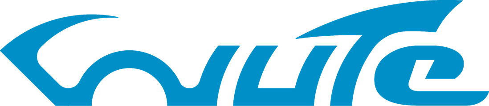
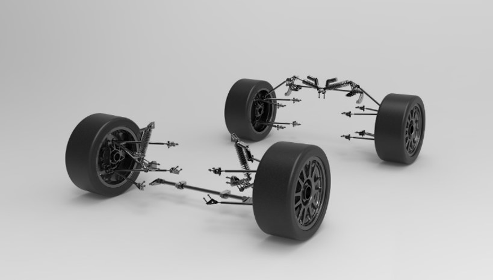
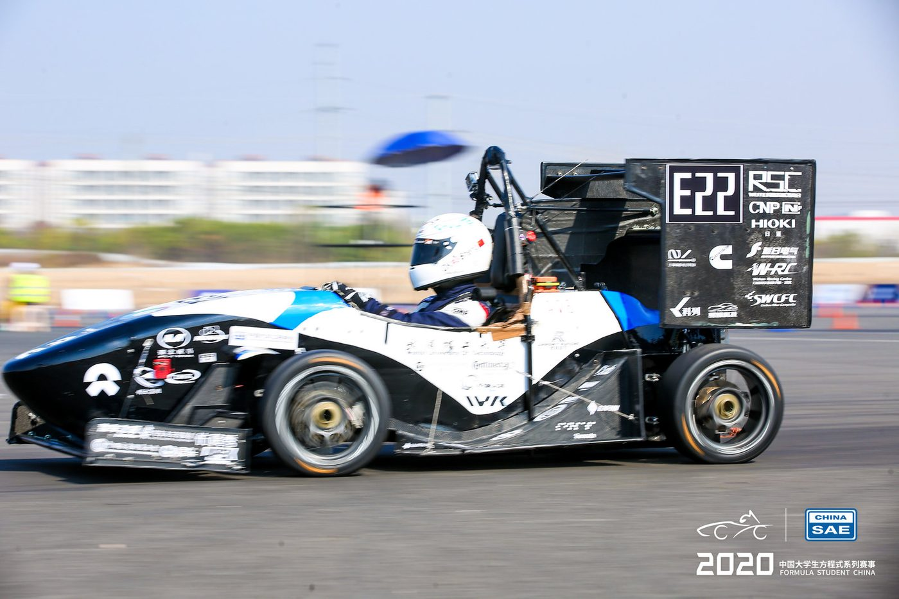
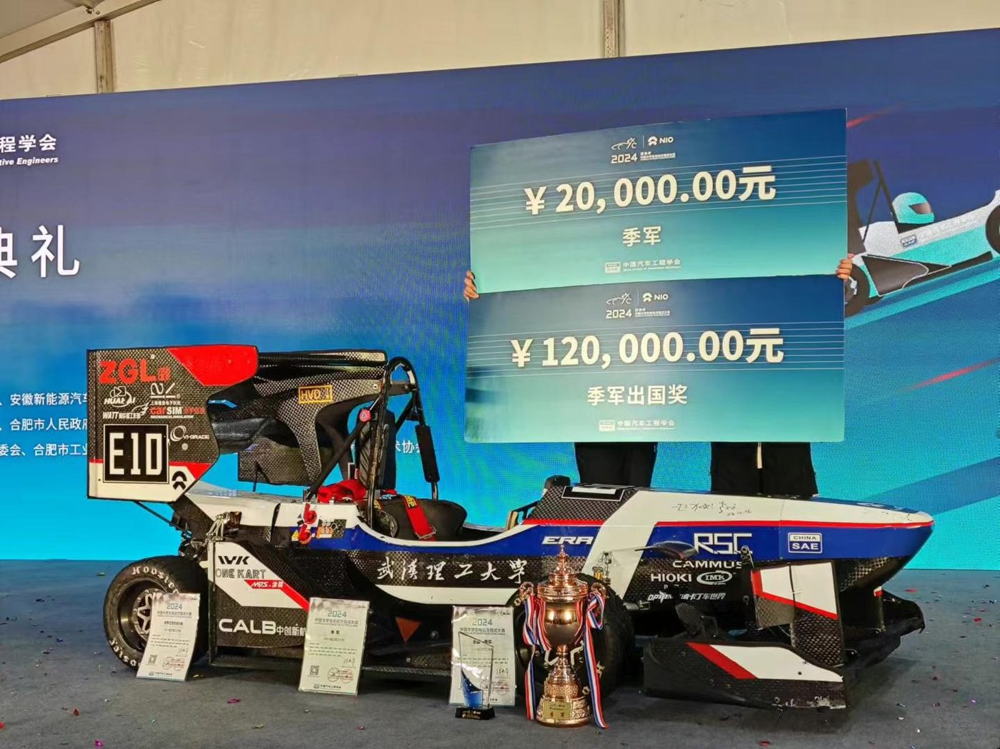

Formula Student Electric

Team Lead & Suspension Engineer & Driver · Wuhan University of Technology · 2017–2021
Formula Student is where I went from being a car enthusiast to being an engineer. Over four years, my teammates and I designed and built four race cars, and I competed twice in Formula Student Electric China as a core member of the team.
In the 2018 and 2019 seasons, I worked mainly on the suspension: geometry and structural design, kinematic simulation, component design and analysis, machining, assembly and setup. Partway through 2019, I started to see that while every tech-group had its own technical problems, the bigger ones were at the team level. Technical coordination, day-to-day organisation and communication weren’t working well, and a lot of hard work from the team wasn’t turning into results.

In 2020, I became team leader, and my main goal was to fix how we coordinated and developed the car. At the time, my knowledge of systems engineering didn’t go much beyond the V-model and Gantt charts, so my approach was fairly crude: I made myself the interface between the subteams. I kept track of what each group was doing, called small meetings to sort out interface issues, and stepped in wherever something was stuck. I learned a huge amount that year, and I also wore myself out, physically and mentally. Most of all, it showed me why systems engineering exists.
The whole team’s work paid off. We reached the Engineering Design finals for the first time in the team’s history, and the team has made the finals every year since. We also finished Endurance after four straight years of DNFs (Did Not Finish) and got back into the national top ten. After I left, the next generations built better cars and went further than we did. I’m proud of what they’ve achieved.


22nd in the world ranking (So Proud!)
My bachelor’s thesis also grew out of Formula Student. I looked at whether four-wheel steering could benefit a Formula Student car, using MATLAB to optimise the rear-steering mechanism and VI-grade and Simulink to simulate the vehicle dynamics.
Most Formula Student teams in China run on tight budgets. Ours was RMB 150,000–250,000 (approx. €20,000–30,000) a season, and we regularly carried parts like dampers and motors over from one car to the next. Building a competitive car with a monocoque chassis on that budget meant constant trade-offs: keeping costs under control and spending money only where it actually made the car faster.
Those years were exciting, and at times the pressure was crushing. We celebrated and cried together, fell asleep on the workshop floor after late nights, and argued about technical decisions and where the team should go. Looking back, they shaped the way I do engineering and the way I work with people.
Many thanks to everyone who gave their time and energy to the team!